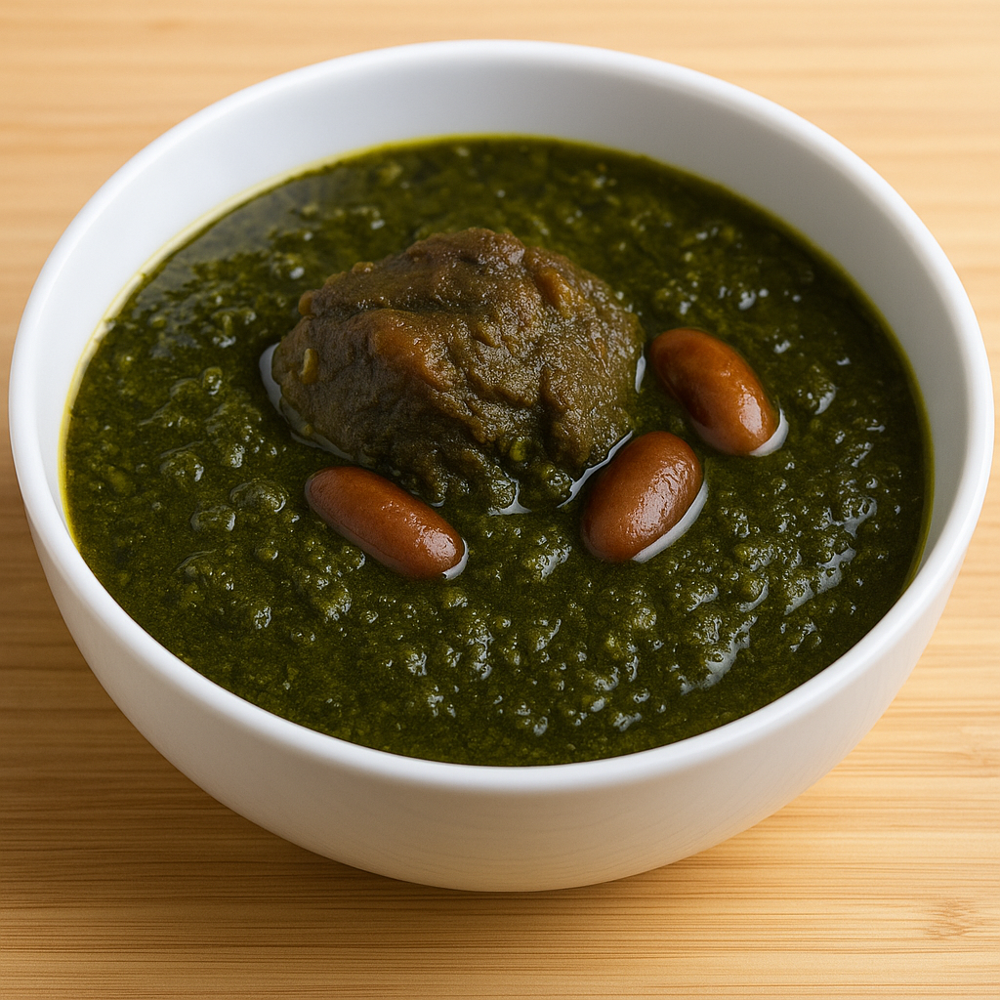

How the people in Tehran will make it
[Tehrani Style Ghorme Sabzi]

The Tehrani version of Ghorme Sabzi is perhaps the most widely known and cooked style across Iran. It emphasizes a rich, balanced flavor with slightly more dried lime for a deeper tangy touch. This version is usually slow-cooked and served with Persian steamed rice (chelo).
Instructions:
- Prepare the herbs: Finely chop fresh parsley, coriander, and chives or leeks. Dry them slightly if needed, then sauté them in a bit of oil until dark green and aromatic.
- Sauté the onion: In a separate large pot, fry finely chopped onion until golden. Add turmeric and stir well.
- Add meat: Add lamb or beef cubes to the onion and brown them on all sides.
- Mix herbs and beans: Add the sautéed herbs to the pot along with soaked kidney beans. Stir gently.
- Add water: Pour in enough water to cover the mixture. Bring to a boil, then reduce to a simmer.
- Add dried limes: Pierce 2–3 dried limes with a fork and drop them into the stew. This is key to the Tehrani flavor.
- Simmer gently: Cover and cook on low heat for 2–3 hours until the meat is tender and the flavors have combined deeply.
- Final touch: Season with salt, pepper, and a touch of lemon juice if desired.
Tehrani Ghorme Sabzi is known for its patience and depth — it’s not rushed, and that’s why it’s unforgettable. It's traditionally served with buttery saffron rice, and sometimes with a side of raw onions or torshi (pickled vegetables).